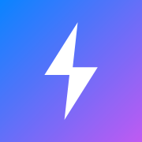

İnternet bağlantısı yok veya uçak modundasınız. Tüm verileriniz yerel önbellekte güvende ve kaydedilmeye devam ediyor.
Bu kategoride henüz kayıt yok.
Diğer cihazınızda da (iPhone, PC, tablet vb.) aynı PIN kodunu kullanarak notlarınızı ve görevlerinizi gerçek zamanlı senkronize edebilirsiniz.